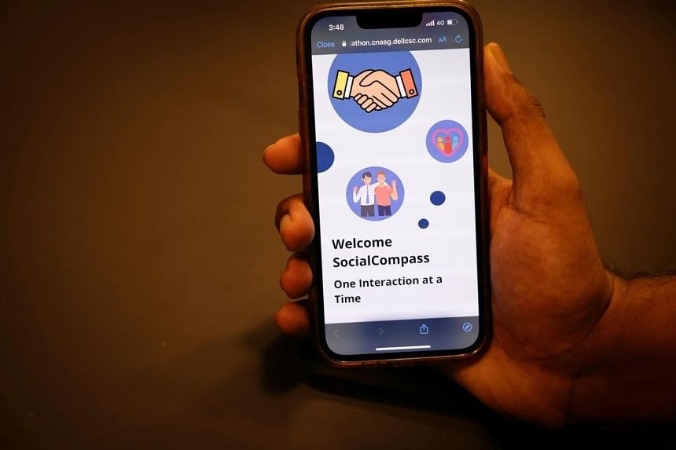
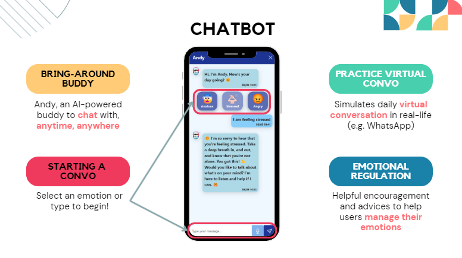

SocialCompass
SocialCompass is a groundbreaking app designed to empower Persons with Intellectual Disabilities (PWIDs) to confidently navigate social interactions. This cloud-native application provides Guided Scenarios, allowing users to practice verbal and non-verbal communication in simulated real-world situations. Each session incorporates instant feedback and a badge reward system to keep users engaged and motivated.
The AI-powered Chatbot acts as a personal assistant, helping users with emotional regulation and enabling them to practice communication skills online. From booking peer interaction sessions to accessing curated video tutorials, the app offers holistic support to enhance confidence and composure in daily interactions.
Technologically, SocialCompass leverages a robust microservices architecture with tools like Harbor and OpenShift for seamless scalability and resilience. NVIDIA NIM models power the chatbot, ensuring efficient and responsive interaction, optimized through rigorous testing. This project showcases a perfect blend of user-centric design and technical innovation.